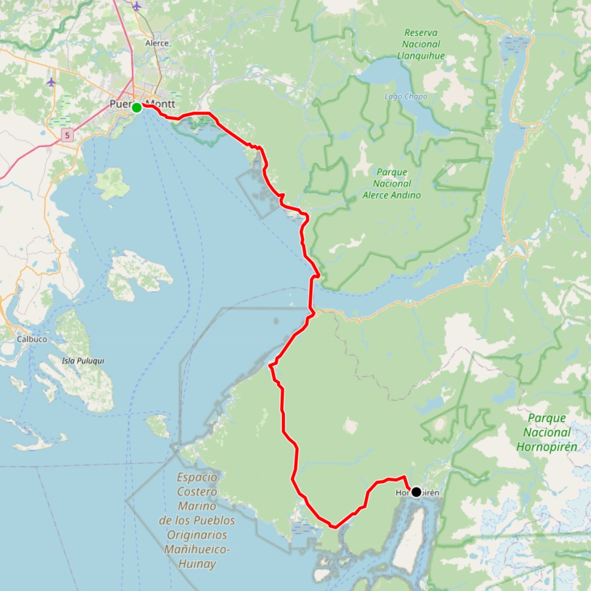
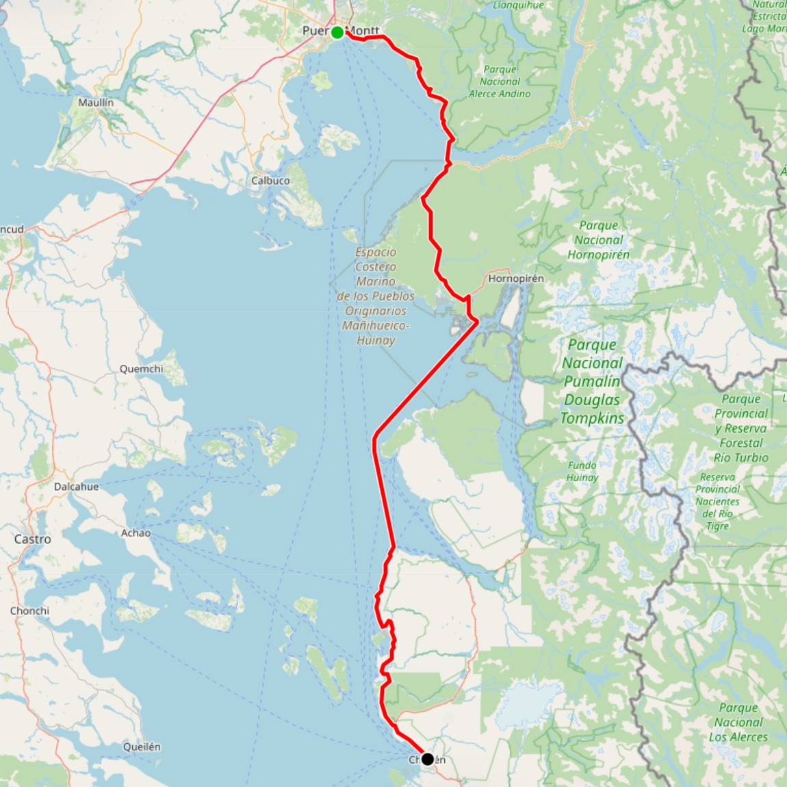

X Región, Chile
X Región, Chile
Conoce nuestros horarios y rutas disponibles

La Ruta 7 conecta Puerto Montt con Hornopirén mediante un tramo costero hasta Caleta La Arena, un transbordo marítimo por el Estuario del Reloncaví hacia Caleta Puelche y un segmento final de bosque nativo.

La Ruta 7 conecta Puerto Montt con Chaitén integrando el tramo costero y el cruce del estuario hacia Hornopirén, punto donde se inicia un extenso transbordo marítimo bimodal por los fiordos hasta Caleta Gonzalo.
Los horarios pueden variar según las condiciones climáticas y mareas. Se recomienda llegar con 30 minutos de anticipación al terminal de salida.